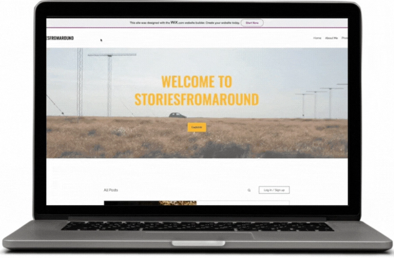
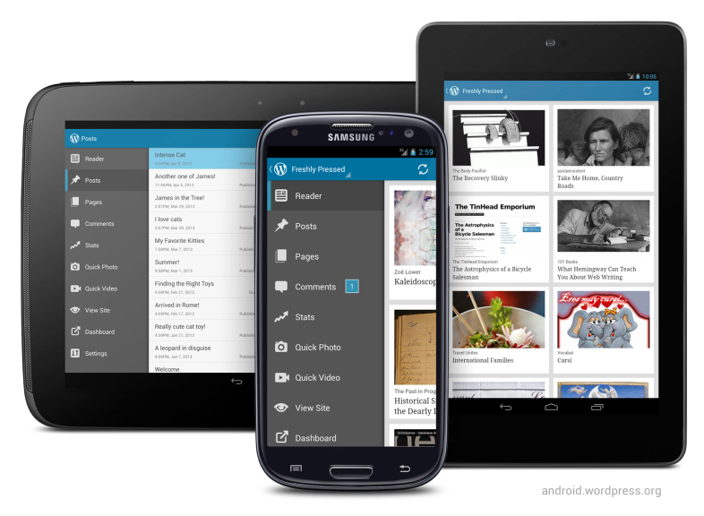

{{item.text}}
{{item.description}}
{{item.description2}}
{{item.description3}}
{{item.description4}}
{{item.description5}}
{{item.text}}
{{item.description}}
{{item.description2}}
{{item.description3}}
{{item.description4}}
{{item.description5}}
Approach & Process
{{item.text}}
{{item.description}}
{{item.description2}}
{{item.description3}}
{{item.description4}}
{{item.description5}}
How might we build a public travel journal that’s easy to use on the go and allows the content creator to cultivate their creativity?
Storiesfromaround is a public travel journal showcasing tales of different encounters with people, cultures, experiences among other escapades of the renown travel blogger Maryann Kariuki. The target reader audience is 20-40 year olds who love to travel across the globe.
Goal #1: Document personal travel stories via written articles in a real-time, easy to use and mobile fashion.
Goal #2: Showcase the content creator’s diverse mobile photography portfolio.
Goal #3: Capture the user’s stories in audio format by integrating a podcast.
Goal #4: Eliminate the guilt and difficulty that’s associated with travel burnout that discourages from consistently publishing content onto the journal.
Key Insights from User Research
To learn and understand better the goals, motivations and frustrations of our users, we conducted user interviews and generated a user persona to guide in collecting and analyzing the user research.
{{item.insight1}}
{{item.insight2}}
{{item.insight5}}
{{item.insight6}}

The client started off by sharing a prototype design she had created on Wix, an online website builder.
We conducted a website audit and re-developed the website on Wordpress to tap into the
benefits of a stable CMS and on-the-go content publishing.
Key insights collected from usability testing focused on the ease of creating, editing and publishing content on the go
and eliminate the guilt and difficulty of publishing content that’s associated with travel burnout.
Facilitate the installation and setup of storiesromaround on Wordpress android supported mobile application to facilitate content creation on the go.
Integrate an Instagram-stories with highlights like feature onto the platform that either pulls content directly from the content creator’s Instagram or allows
for publishing of highlights powered by EmbedSocial.
Visual Concept
Color Scheme
Stories From Around makes use of a minimalistic pallet with one main bright color for highlights, a dark color for contrast and a single color for background and surface color.
{{item.hex}}
Typography
{{item.text}}
{{item.text3}}
Useful Links
{{item.subtext}}
{{item.text}}